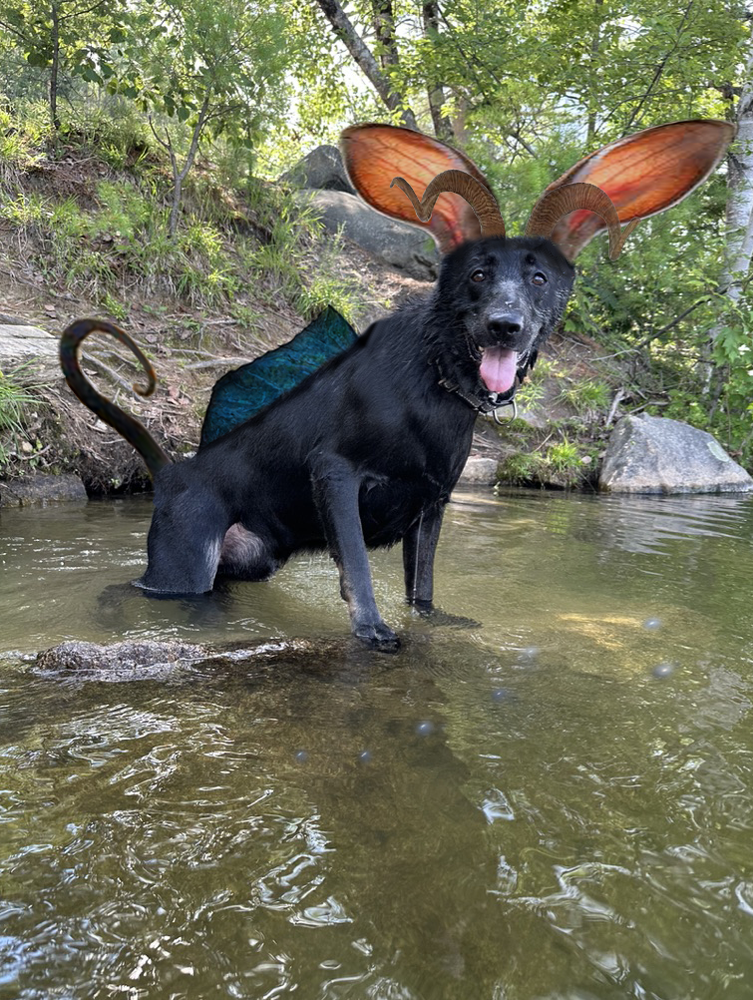

For our photo manipulation project, I wanted to create a cryptid based on my brother's dog. It is a photo of him in the water with various body parts added. A monkey tail will definitely be included, and a fin because of the water. His name is Odin, so it includes the Ursa Major in the water because it is associated with the Norse God Odin. I added rabbit ears and ram horns as well.
